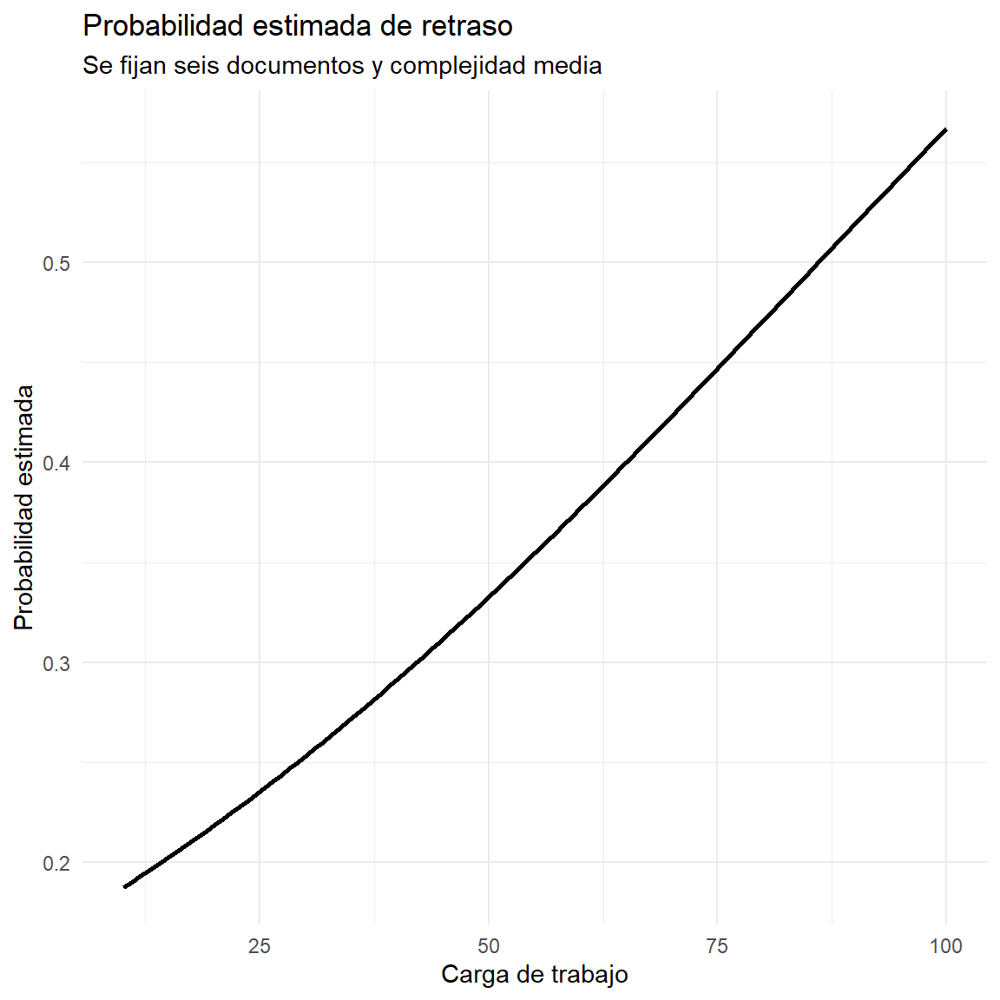
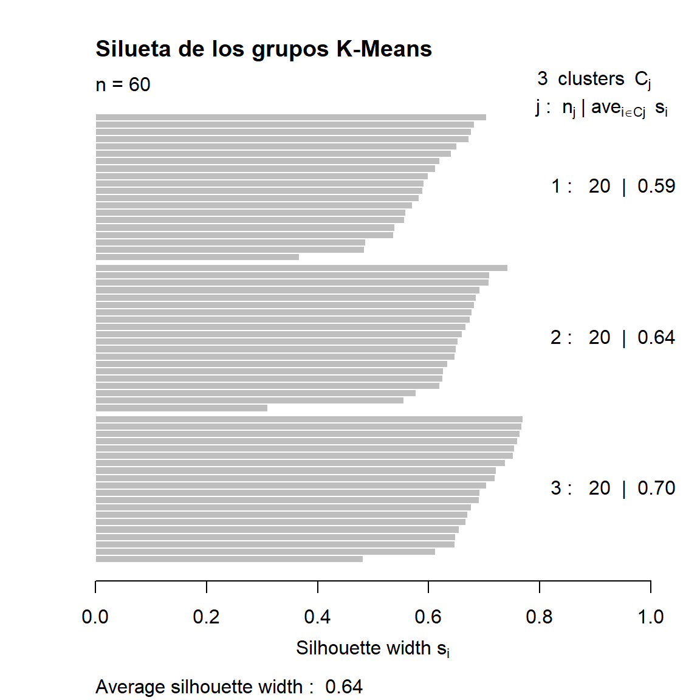
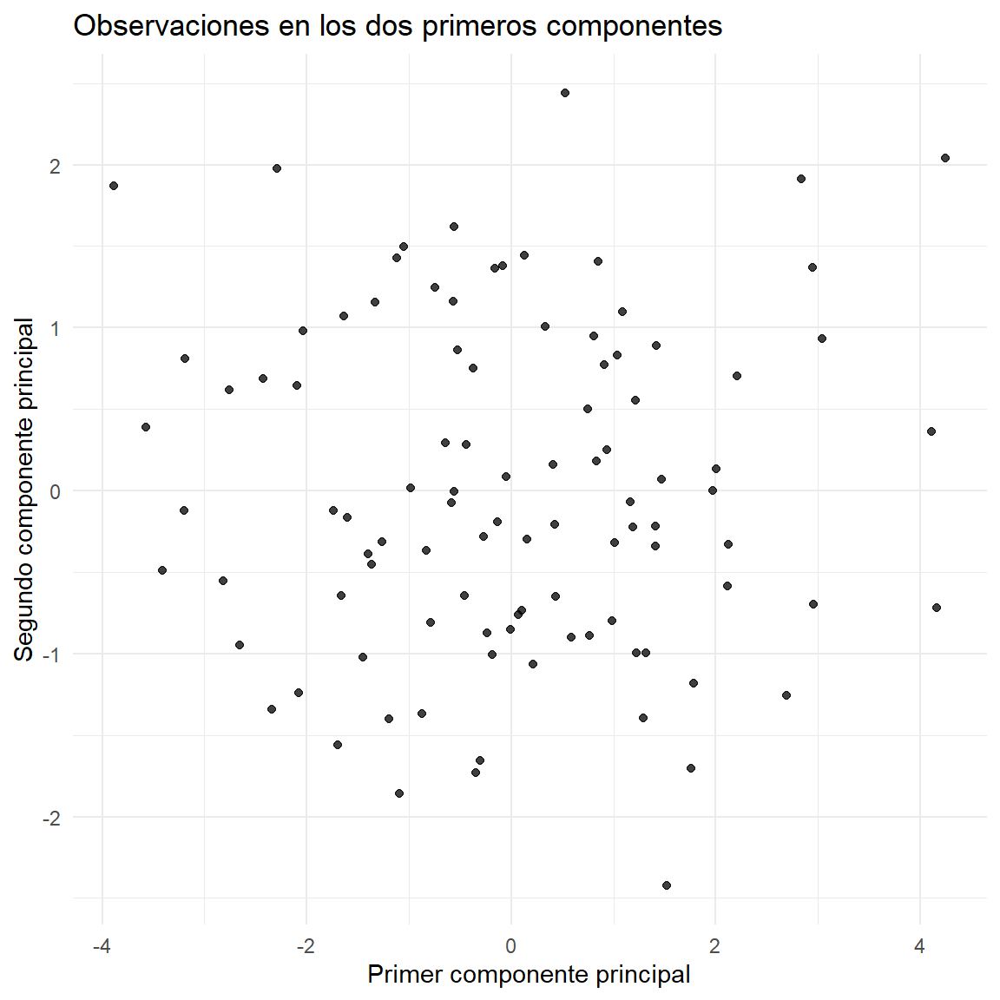

Esta unidad estudia dos familias de métodos de aprendizaje automático: el aprendizaje supervisado y el aprendizaje no supervisado. En el primero, los modelos aprenden la relación entre variables predictoras y una respuesta conocida. En el segundo, los algoritmos buscan estructuras, agrupaciones o patrones sin disponer de una respuesta etiquetada.
Se desarrollan los Modelos Lineales Generalizados (GLM), la regresión múltiple, la regresión logística y la construcción de modelos con caret. También se estudian el análisis de conglomerados, K-Means, la evaluación de grupos, el Análisis de Componentes Principales (PCA) y estrategias para reducir dimensionalidad.
Los laboratorios utilizan datos simulados contextualizados en la administración pública. No representan registros reales de ciudadanos ni de instituciones.
Importante
Objetivo general: aplicar modelos supervisados y métodos de aprendizaje no supervisado en R para analizar datos, realizar predicciones, identificar agrupaciones y reducir la dimensionalidad, evaluando e interpretando sus resultados.
Resultados de aprendizaje
Al finalizar la unidad, el estudiante estará en capacidad de:
Explicar los fundamentos y usos de los Modelos Lineales Generalizados.
Diferenciar modelos gaussianos, binomiales y de Poisson según la variable respuesta.
Construir e interpretar modelos de regresión múltiple y logística.
Entrenar, comparar y seleccionar modelos mediante caret.
Explicar la validación cruzada y distinguirla de la evaluación con datos de prueba.
Aplicar técnicas de agrupamiento y K-Means.
Evaluar agrupamientos mediante criterios internos, como la silueta.
Aplicar PCA para resumir información y reducir dimensiones.
Reconocer precauciones para analizar grandes volúmenes de datos.
Organización temática
2.1. Modelos supervisados en R: GLM, regresión múltiple, regresión logística, caret, entrenamiento, evaluación y validación cruzada.
2.2. Aprendizaje no supervisado: conglomerados, K-Means, PCA y reducción de dimensionalidad.
3 .Modelos supervisados en R
Fundamentos del aprendizaje supervisado
El aprendizaje supervisado utiliza observaciones que contienen variables predictoras y una variable respuesta conocida. El algoritmo busca una función que relacione las características de entrada con el resultado:
Si la respuesta es cuantitativa, se plantea un problema de regresión. Si es categórica, se plantea uno de clasificación.
Etapas habituales:
Definir el problema y la variable objetivo.
Identificar predictores disponibles al momento de predecir.
Obtener, depurar y explorar los datos.
Separar datos para entrenamiento y evaluación.
Ajustar modelos.
Comparar su desempeño con métricas pertinentes.
Seleccionar un modelo considerando precisión, interpretabilidad y costos de error.
Comunicar resultados y monitorear el modelo.
Modelos Lineales Generalizados (GLM)
Definición y componentes
Los Modelos Lineales Generalizados amplían el modelo lineal clásico para permitir que la respuesta siga distribuciones de la familia exponencial, como la normal, binomial o Poisson.
Un GLM contiene tres componentes:
Componente aleatorio: distribución de probabilidad de la respuesta.
Componente sistemático: combinación lineal de predictores.
Función de enlace: relaciona la media de la respuesta con el predictor lineal.
La exponencial de un coeficiente representa una razón de medias esperadas asociada con un incremento unitario del predictor, manteniendo constantes los demás, bajo el modelo. Poisson supone igualdad entre media y varianza condicional. Si existe sobredispersión, se deben considerar alternativas como cuasi-Poisson o binomial negativa. Para diferentes tiempos de exposición puede ser necesario un término offset.
4 .Regresión múltiple con GLM
La regresión múltiple modela una respuesta cuantitativa mediante dos o más predictores. Para un GLM gaussiano con enlace identidad:
Cada coeficiente expresa el cambio esperado en la respuesta por una unidad adicional del predictor correspondiente, manteniendo constantes los demás predictores.
Ejemplo: una alcaldía desea estudiar el tiempo de resolución de trámites según número de documentos, carga de trabajo, complejidad y experiencia del funcionario:
documentos carga complejidad experiencia tiempo
1 9 58.65415 Media 12.707504 12.174051
2 1 98.51394 Alta 9.120933 5.170763
3 6 83.74558 Baja 14.291592 8.928710
4 11 63.23679 Media 4.712703 10.474188
5 12 56.91958 Media 4.298552 11.660155
6 4 83.36135 Media 16.789166 4.310575
Ver código
summary(datos_glm)
documentos carga complejidad experiencia tiempo
Min. : 1.000 Min. :12.02 Baja :66 Min. : 1.107 Min. :-1.830
1st Qu.: 3.000 1st Qu.:35.02 Media:72 1st Qu.: 5.415 1st Qu.: 5.649
Median : 5.500 Median :58.67 Alta :42 Median :10.826 Median : 8.152
Mean : 6.072 Mean :56.71 Mean :10.516 Mean : 8.007
3rd Qu.: 9.000 3rd Qu.:76.97 3rd Qu.:14.805 3rd Qu.:10.596
Max. :12.000 Max. :99.63 Max. :19.872 Max. :18.532
Ver código
ggplot(datos_glm, aes(x = complejidad, y = tiempo)) +geom_boxplot(fill ="steelblue", alpha =0.7) +labs(title ="Tiempo de resolución según complejidad",x ="Complejidad del trámite",y ="Tiempo (días)" ) +theme_minimal()
Los diagnósticos exploran patrones residuales, normalidad aproximada, homogeneidad de varianza e influencia. Deben complementarse con conocimiento del diseño. El valor p no mide importancia práctica ni demuestra causalidad.
5 .Regresión logística
Concepto
La regresión logística es un GLM para respuestas binarias:
Y_i\in{0,1}, \qquad p_i=P(Y_i=1\mid X_i)
Modela la probabilidad mediante la función logística:
Al exponenciar un coeficiente se obtiene una razón de odds:
OR_j=\exp(\beta_j)
Esta representa el cambio multiplicativo en las odds por una unidad adicional del predictor, manteniendo constantes los demás. No equivale a multiplicar la probabilidad por ese valor y no implica causalidad.
Laboratorio en R: probabilidad de retraso de un trámite
rejilla <-data.frame(carga =seq(min(datos_log$carga), max(datos_log$carga),length.out =100),documentos =6,complejidad =factor("Media", levels =levels(datos_log$complejidad) ))rejilla$probabilidad <-predict( modelo_log, newdata = rejilla, type ="response")ggplot(rejilla, aes(carga, probabilidad)) +geom_line(linewidth =1) +labs(title ="Probabilidad estimada de retraso",subtitle ="Se fijan seis documentos y complejidad media",x ="Carga de trabajo",y ="Probabilidad estimada" ) +theme_minimal()

Umbral de clasificación
El modelo genera probabilidades. Para convertirlas en clases se selecciona un umbral. El valor 0.5 es ilustrativo, no una regla universal. Debe elegirse considerando los costos de falsos positivos y falsos negativos.
En una entidad pública, la predicción puede apoyar la revisión de trámites, pero no debe utilizarse para negar derechos ni automatizar decisiones sensibles sin controles.
5.1 .Construcción de modelos con caret
¿Qué es caret?
caret (Classification And Regression Training) proporciona una interfaz común para entrenar, ajustar y comparar numerosos algoritmos. Facilita partición de datos, preprocesamiento, remuestreo y búsqueda de hiperparámetros.
La función central es train(). Entre sus argumentos:
form: fórmula del modelo.
data: datos de entrenamiento.
method: algoritmo.
trControl: estrategia de remuestreo.
preProcess: transformaciones.
metric: métrica de selección.
División entrenamiento y prueba
Ver código
# Instalar si aún no está disponible:# install.packages("caret")library(caret)set.seed(2026)id_train <-createDataPartition( datos_glm$tiempo, p =0.75, list =FALSE)entrenamiento <- datos_glm[id_train, ]prueba <- datos_glm[-id_train, ]
El conjunto de prueba se reserva para la evaluación final. No debe utilizarse repetidamente para escoger modelos o hiperparámetros.
Validación cruzada
En validación cruzada de (k) particiones (k-fold), los datos de entrenamiento se dividen en (k) folds. En cada iteración se ajusta el modelo con (k-1) folds y se evalúa con el fold restante:
CV_k=\frac{1}{k}\sum_{j=1}^{k}L_j
Donde (L_j) es el error obtenido en el fold (j).
Ver código
control_cv <-trainControl(method ="cv",number =5)
Entrenamiento y comparación de modelos
Se comparan un modelo lineal y Ridge. Ridge penaliza la magnitud de los coeficientes y puede ayudar cuando existe colinealidad o muchos predictores.
Linear Regression
136 samples
4 predictor
No pre-processing
Resampling: Cross-Validated (5 fold)
Summary of sample sizes: 109, 109, 108, 109, 109
Resampling results:
RMSE Rsquared MAE
2.465936 0.4683229 1.955275
Tuning parameter 'intercept' was held constant at a value of TRUE
Ver código
modelo_ridge
Ridge Regression
136 samples
4 predictor
Pre-processing: centered (5), scaled (5)
Resampling: Cross-Validated (5 fold)
Summary of sample sizes: 108, 108, 110, 110, 108
Resampling results across tuning parameters:
lambda RMSE Rsquared MAE
1e-03 2.458226 0.5004586 1.991967
1e-02 2.457866 0.5002695 1.990460
1e-01 2.458751 0.4979181 1.979099
1e+00 2.517898 0.4740100 1.999312
1e+01 2.594923 0.4414748 2.056185
RMSE was used to select the optimal model using the smallest value.
The final value used for the model was lambda = 0.01.
RMSE: raíz del error cuadrático medio; penaliza con mayor intensidad errores grandes.
MAE: error absoluto medio.
R²: proporción de variabilidad explicada respecto a la media en el conjunto evaluado. Puede ser negativo en prueba.
La selección debe considerar desempeño, estabilidad, interpretabilidad, costo computacional y consecuencias de los errores.
Advertencia
La validación cruzada sirve para comparar configuraciones dentro del entrenamiento. El conjunto de prueba se reserva para una evaluación final independiente. Si se utiliza repetidamente para ajustar el modelo, deja de ser una prueba imparcial.
6 .Métodos de aprendizaje no supervisado
Fundamentos
El aprendizaje no supervisado trabaja con datos sin una variable respuesta etiquetada. Busca estructuras, agrupaciones o representaciones que permitan comprender la organización de los datos.
Técnicas frecuentes:
Análisis de conglomerados (clustering).
K-Means.
Agrupamiento jerárquico.
Análisis de Componentes Principales (PCA).
Métodos no lineales de reducción de dimensionalidad.
En administración pública pueden utilizarse para explorar perfiles municipales, patrones de gasto, uso de servicios o indicadores territoriales. Los grupos obtenidos son estructuras matemáticas; su interpretación requiere conocimiento del contexto.
Análisis de conglomerados
El análisis de conglomerados agrupa observaciones de manera que las unidades de un mismo grupo sean similares y se distingan de las de otros grupos.
Distancia euclidiana
Para dos observaciones con (p) variables:
d(x_i,x_j)=\sqrt{\sum_{r=1}^{p}(x_{ir}-x_{jr})^2}
Una distancia pequeña representa proximidad en el espacio de variables.
Estandarización
Cuando las variables están en escalas diferentes, las de mayor magnitud pueden dominar las distancias. Una transformación común es:
z_{ij}=\frac{x_{ij}-\bar{x}_j}{s_j}
La estandarización debe justificarse según las unidades y el significado de las variables.
Técnicas de agrupamiento
K-Means: minimiza la variación intragrupo respecto a centroides.
Jerárquico: construye agrupaciones sucesivas representadas mediante dendrogramas.
DBSCAN: identifica regiones densas y observaciones aisladas, sin exigir definir previamente el número de grupos.
Algoritmo K-Means
K-Means divide (n) observaciones en (K) grupos. Cada grupo se representa mediante un centroide, que es el vector de medias de sus observaciones.
El objetivo es minimizar la suma de cuadrados intragrupo:
Las etiquetas de los grupos se asignan después de revisar sus perfiles. El algoritmo no identifica por sí mismo categorías como desarrollo alto o bajo.
7 .Evaluación de conglomerados
Suma de cuadrados intragrupo
Mide la dispersión respecto a los centroides. Disminuye al aumentar el número de grupos, por lo que no debe utilizarse sola para elegir (K).
Coeficiente de silueta
Compara la cohesión de una observación con su grupo y su separación respecto al grupo vecino:
s(i)=\frac{b(i)-a(i)}{\max\{a(i),b(i)\}}
Donde (a(i)) es la distancia promedio al propio grupo y (b(i)) la menor distancia promedio a otro grupo.
El coeficiente está entre -1 y 1. Valores cercanos a 1 indican buena asignación; valores cercanos a 0 sugieren solapamiento; valores negativos pueden indicar asignaciones poco adecuadas.
Ver código
# Instalar una sola vez si es necesario:# install.packages("cluster")library(cluster)distancias <-dist(datos_escalados)sil <-silhouette(modelo_kmeans$cluster, distancias)summary(sil)
Silhouette of 60 units in 3 clusters from silhouette.default(x = modelo_kmeans$cluster, dist = distancias) :
Cluster sizes and average silhouette widths:
20 20 20
0.5865916 0.6403897 0.6952258
Individual silhouette widths:
Min. 1st Qu. Median Mean 3rd Qu. Max.
0.3106 0.5980 0.6541 0.6407 0.6928 0.7700
Ver código
plot(sil, main ="Silueta de los grupos K-Means")

La silueta promedio es útil para comparar soluciones, pero debe complementarse con estabilidad, tamaño de grupos e interpretación sustantiva.
8 .Análisis de Componentes Principales (PCA)
Concepto y propósito
PCA transforma variables posiblemente correlacionadas en componentes no correlacionados, ordenados según la varianza que explican.
Se utiliza para explorar relaciones, resumir información, visualizar datos multivariados y reducir dimensiones. No es, por sí mismo, una técnica de predicción supervisada ni un algoritmo de agrupamiento.
Fundamento matemático
Sea (X) una matriz de datos centrada, con (n) observaciones y (p) variables. Su matriz de covarianzas es:
S=\frac{1}{n-1}X^\top X
PCA calcula valores propios (\lambda_j) y vectores propios (v_j):
Sv_j=\lambda_jv_j
Los componentes son:
PC_j=Xv_j
La proporción de varianza explicada por el componente (j) es:
Importance of components:
PC1 PC2 PC3 PC4 PC5
Standard deviation 1.7383 1.0230 0.68652 0.60742 0.30254
Proportion of Variance 0.6043 0.2093 0.09426 0.07379 0.01831
Cumulative Proportion 0.6043 0.8136 0.90790 0.98169 1.00000
La opción center = TRUE resta la media y scale. = TRUE divide por la desviación estándar. Esto es frecuente cuando las variables tienen escalas diferentes.
Las cargas son los coeficientes que combinan las variables originales para formar cada componente. El signo depende de la orientación matemática del vector propio; invertir todos los signos de un componente no cambia su significado.
Proyección de observaciones:
Ver código
scores <-as.data.frame(pca$x)ggplot(scores, aes(PC1, PC2)) +geom_point(alpha =0.75) +labs(title ="Observaciones en los dos primeros componentes",x ="Primer componente principal",y ="Segundo componente principal" ) +theme_minimal()

La proximidad en este plano refleja similitud respecto a la información retenida por los componentes mostrados, no necesariamente en todas las dimensiones originales.
Reducción de dimensionalidad en grandes volúmenes de datos
La dimensionalidad corresponde al número de variables que describen cada observación. Cuando existen cientos o miles de características, el análisis puede requerir más memoria, tiempo y recursos computacionales.
La reducción de dimensionalidad busca representar los datos con menos variables o componentes, conservando la información relevante para el objetivo.
Métodos frecuentes
Método
Característica
Uso
PCA
Transformación lineal basada en varianza
Variables cuantitativas
Selección de variables
Conserva variables originales relevantes
Interpretabilidad
SVD
Descomposición matricial
Matrices grandes o dispersas
UMAP
Proyección no lineal
Exploración y visualización
t-SNE
Preserva vecindades locales
Visualización exploratoria
PCA es una referencia lineal. UMAP y t-SNE se utilizan principalmente para exploración visual; las distancias globales en sus mapas no deben interpretarse como si preservaran todas las relaciones originales.
Ejemplo de reducción de 10 variables a componentes
El umbral de 80 % es ilustrativo, no una regla universal. Se debe informar la varianza conservada y justificar el número de componentes.
Consideraciones para Big Data
El ejemplo de mil observaciones es una demostración didáctica, no un procesamiento Big Data a escala productiva. Para millones de filas o miles de columnas conviene considerar:
Lectura por bloques y procesamiento incremental.
Formatos columnares y almacenamiento eficiente.
Muestreo representativo para exploración.
PCA incremental o aproximado.
Matrices dispersas cuando abundan los ceros.
Memoria disponible y costo computacional.
Reproducibilidad y control de versiones.
Validación de la información que se pierde.
Un PCA sobre una muestra no necesariamente reproduce exactamente los componentes de toda la población. Deben examinarse representatividad y estabilidad.
9 .Comparación entre métodos supervisados y no supervisados
Característica
Supervisado
No supervisado
Respuesta conocida
Sí
No
Propósito
Predecir una respuesta
Descubrir estructura
Métodos
GLM, regresión logística
K-Means, PCA
Evaluación
Métricas frente a respuestas observadas
Cohesión, separación, estabilidad e interpretación
Resultado
Predicción o clasificación
Grupos o componentes
Un mismo proyecto puede combinar ambos enfoques. Por ejemplo, se pueden identificar grupos de municipios mediante K-Means y después utilizar un modelo supervisado para predecir una variable de interés.
10 .Buenas prácticas y consideraciones éticas
Calidad y representatividad
Los datos pueden contener errores, duplicados, omisiones o sesgos de selección. Un algoritmo complejo no corrige automáticamente una base deficiente.
Interpretabilidad y equidad
Un modelo con buen desempeño puede ser difícil de explicar. Los datos históricos pueden reflejar desigualdades y el algoritmo reproducirlas o amplificarlas. Se recomienda evaluar errores por grupos relevantes, cuando sea legal y metodológicamente apropiado.
Privacidad y supervisión
Los datos personales deben tratarse para finalidades legítimas, con medidas de seguridad y acceso limitado. En Colombia debe considerarse la Ley 1581 de 2012. Las decisiones que afecten a personas deben contar con mecanismos de revisión humana, corrección y auditoría.
11 .Ejercicios resueltos
Ejercicio resuelto 1. Regresión múltiple
Una entidad estima el tiempo de resolución mediante:
\widehat{Y}=3+0.5X_1+0.04X_2-0.2X_3
Donde (X_1) es número de documentos, (X_2) carga diaria y (X_3) años de experiencia. Para 6 documentos, carga 50 y experiencia 5:
\widehat{Y}=3+0.5(6)+0.04(50)-0.2(5) =3+3+2-1=7
El tiempo estimado es 7 unidades de tiempo. La interpretación supone que las unidades y rangos corresponden al conjunto de ajuste.
Ejercicio resuelto 2. Razón de odds
Si un coeficiente logístico es 0.7:
OR=\exp(0.7)\approx2.01
Manteniendo constantes los demás predictores, las odds estimadas del evento se multiplican aproximadamente por 2.01 ante un incremento unitario del predictor. No significa que la probabilidad se duplique.
Ejercicio resuelto 3. Silueta
Una solución tiene silueta promedio de 0.62. El valor positivo y relativamente cercano a 1 sugiere cohesión y separación razonables. Deben revisarse también estabilidad, tamaño e interpretación de los grupos.
Ejercicio resuelto 4. PCA
Si los primeros tres componentes explican 45 %, 30 % y 15 % de la varianza:
45% + 30% + 15% = 90%
Los tres componentes resumen el 90 % de la variabilidad total de las variables estandarizadas. El 10 % restante no queda representado por esos tres componentes.
12 .Taller de aplicación
Ejercicio 1. Selección de un GLM
Una entidad registra el número de solicitudes recibidas por dependencia y día.
¿Qué distribución podría considerarse para modelar el conteo?
Escriba un modelo de Poisson con dos predictores.
Explique la función de enlace.
¿Qué problema puede aparecer si la varianza condicional es mucho mayor que la media?
Ejercicio 2. Regresión múltiple
Una alcaldía estudia el tiempo de resolución según documentos, carga de trabajo y experiencia.
Escriba el modelo.
Interprete los coeficientes.
Proponga dos diagnósticos.
Explique qué significa mantener constantes los demás predictores.
Ejercicio 3. Regresión logística
Un modelo estima la probabilidad de retraso.
¿Por qué se utiliza una función logística?
Interprete un coeficiente de 0.4 mediante su razón de odds.
Calcule la probabilidad cuando el predictor lineal es ().
Explique por qué el umbral 0.5 no siempre es óptimo.
Ejercicio 4. Validación cruzada con caret
Se comparan dos modelos mediante validación cruzada de 10 folds.
Explique cómo se forman los folds.
¿Qué función configura el remuestreo?
¿Qué representa el RMSE promedio?
¿Por qué se conserva un conjunto de prueba independiente?
Ejercicio 5. K-Means
Se agrupan municipios según ingreso, cobertura y conectividad.
¿Por qué estandarizar?
Explique el centroide.
Describa el método del codo.
¿Qué aporta la silueta?
Mencione dos limitaciones de K-Means.
Ejercicio 6. PCA
Una base contiene 30 indicadores socioeconómicos.
Explique el propósito de PCA.
¿Por qué puede ser necesaria la estandarización?
Si dos componentes explican 72 %, interprete el resultado.
¿Qué representan las cargas?
¿Por qué reducir dimensiones facilita el análisis?
Ejercicio 7. Aplicación integral
Una gobernación dispone de indicadores de 200 municipios: cobertura educativa, salud, ingreso, conectividad, inversión y número de trámites.
Proponga una estrategia que incluya:
Un procedimiento no supervisado para identificar perfiles.
Una técnica para visualizar y resumir indicadores.
Un modelo supervisado para predecir inversión del siguiente año.
Una estrategia de evaluación para cada procedimiento.
Dos precauciones éticas o metodológicas.
13 .Solucionario orientador
Ejercicio 1
Poisson puede ser un punto de partida para una respuesta de conteo.
Cada coeficiente expresa el cambio esperado por unidad del predictor, manteniendo constantes los otros.
Residuos frente a ajustados, gráfico Q-Q, heterocedasticidad, influencia y multicolinealidad.
Interpretar la asociación parcial de un predictor suponiendo fijos los demás predictores del modelo.
Ejercicio 3
La función logística transforma cualquier predictor lineal en una probabilidad entre 0 y 1.
OR=\exp(0.4)\approx1.49
Las odds se multiplican aproximadamente por 1.49 por cada unidad adicional del predictor, manteniendo constantes los demás.
p=\frac{1}{1+\exp(-1)}\approx0.7311
La probabilidad es aproximadamente 73.11 %.
El umbral depende del costo de errores, prevalencia y finalidad de la clasificación.
Ejercicio 4
Se dividen los datos en diez subconjuntos. En cada iteración se entrena con nueve y se evalúa con el restante.
trainControl(method = "cv", number = 10).
Resume el error promedio de las particiones de validación.
Permite una evaluación final menos sesgada del modelo seleccionado. No debe intervenir en la selección de hiperparámetros.
Ejercicio 5
Para evitar que una variable de escala mayor domine las distancias.
Es el vector de medias de las observaciones asignadas al grupo.
Compara la suma de cuadrados intragrupo para distintos K y busca dónde la mejora marginal disminuye.
Compara cohesión interna y separación respecto a otros grupos.
Requiere definir K, es sensible a la escala y a valores extremos, y favorece grupos compactos aproximadamente esféricos.
Ejercicio 6
Transformar variables originales en componentes no correlacionados ordenados por varianza explicada.
Las variables pueden tener unidades y escalas diferentes.
Los dos componentes resumen el 72 % de la variabilidad; el 28 % restante no queda representado en ellos.
Son coeficientes que combinan variables originales para formar componentes.
Reduce dimensiones, facilita visualización y puede disminuir redundancia y costo computacional.
Ejercicio 7
Una estrategia posible es estandarizar indicadores y aplicar K-Means para explorar perfiles; utilizar PCA para visualizar patrones y resumir variables; y construir una regresión para predecir inversión futura si existe una respuesta histórica bien definida. Para K-Means se revisan silueta, estabilidad y perfiles; para PCA, varianza explicada y cargas; para regresión, validación temporal, MAE, RMSE y comparación con un modelo de referencia. Se deben revisar calidad, representatividad, privacidad, sesgos y supervisión institucional.
14 .Glosario
Término
Definición
GLM
Modelo que relaciona una respuesta de la familia exponencial con predictores mediante una función de enlace
Función de enlace
Relaciona la media de la respuesta con el predictor lineal
Regresión múltiple
Modelo con una respuesta y varios predictores
Regresión logística
GLM para respuestas binarias
Odds
Cociente entre probabilidad de evento y probabilidad de no evento
caret
Paquete de R para entrenamiento y evaluación
Validación cruzada
Procedimiento de remuestreo para evaluar modelos
Hiperparámetro
Configuración elegida antes o durante el ajuste
Clustering
Agrupamiento de observaciones según similitud
K-Means
Algoritmo de agrupamiento basado en centroides
Centroide
Vector de medias de las observaciones de un grupo
Silueta
Medida de cohesión y separación
PCA
Técnica lineal de reducción de dimensionalidad
Componente principal
Combinación lineal de variables originales
Carga
Coeficiente de una variable original en un componente
Varianza explicada
Proporción de variabilidad representada
15 .Conclusiones
Los modelos supervisados permiten estimar respuestas cuantitativas o clasificar observaciones cuando se dispone de ejemplos históricos etiquetados. Los GLM amplían la regresión lineal mediante distintas distribuciones y funciones de enlace. La regresión múltiple incorpora varios predictores y la regresión logística modela probabilidades para resultados binarios.
caret facilita el entrenamiento y comparación de modelos mediante remuestreo y validación cruzada. La evaluación final debe realizarse con datos independientes y considerar métricas, interpretabilidad y consecuencias de los errores.
Los métodos no supervisados permiten explorar estructuras sin una variable objetivo conocida. K-Means agrupa observaciones mediante centroides y PCA resume variabilidad mediante componentes principales. Ambas técnicas requieren decisiones metodológicas y una interpretación cuidadosa.
En la administración pública, estas herramientas pueden apoyar el análisis territorial, la planeación y la gestión de servicios. Su uso responsable exige calidad de datos, transparencia, protección de información personal, evaluación de sesgos y supervisión humana.
16 ,Referencias bibliográficas
Referencias presentadas en estilo APA 7. Se recomienda consultar las ediciones originales al elaborar trabajos académicos.
Bishop, C. M. (2006). Pattern recognition and machine learning. Springer.
Breiman, L. (2001). Statistical modeling: The two cultures. Statistical Science, 16(3), 199–231. https://doi.org/10.1214/ss/1009213726
Hastie, T., Tibshirani, R., & Friedman, J. (2009). The elements of statistical learning: Data mining, inference, and prediction (2nd ed.). Springer. https://doi.org/10.1007/978-0-387-84858-7
James, G., Witten, D., Hastie, T., Tibshirani, R., & Taylor, J. (2023). An introduction to statistical learning: With applications in R (2nd ed.). Springer. https://www.statlearning.com/
Kassambara, A. (2017). Practical guide to cluster analysis in R: Unsupervised machine learning. STHDA.
Kuhn, M. (2008). Building predictive models in R using the caret package. Journal of Statistical Software, 28(5), 1–26. https://doi.org/10.18637/jss.v028.i05
Kuhn, M., & Johnson, K. (2013). Applied predictive modeling. Springer. https://doi.org/10.1007/978-1-4614-6849-3
McCullagh, P., & Nelder, J. A. (1989). Generalized linear models (2nd ed.). Chapman and Hall.
Wickham, H., & Grolemund, G. (2017). R for data science: Import, tidy, transform, visualize, and model. O’Reilly Media. https://r4ds.hadley.nz/
16.1 Recursos digitales
R Project: https://www.r-project.org/
Documentación de caret: https://topepo.github.io/caret/
Documentación de ggplot2: https://ggplot2.tidyverse.org/
Documentación de cluster: https://cran.r-project.org/package=cluster
Quarto: https://quarto.org/
An Introduction to Statistical Learning: https://www.statlearning.com/
Los datos de los laboratorios son simulados y tienen finalidad didáctica. Antes de aplicar los procedimientos a datos institucionales, verifique la procedencia, autorización, calidad, confidencialidad y pertinencia de las variables.